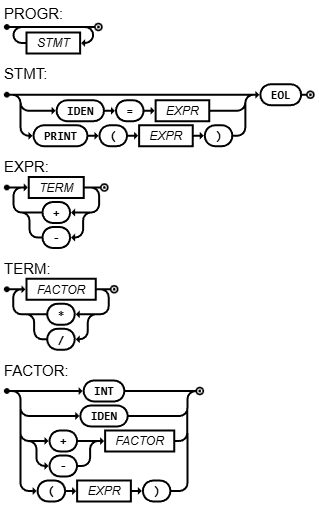

Roteiro 5 (Functional) - v2.0
Entrega: 17/Sep/2026 às 07h15
Objetivos
- Implementar variáveis (identifier) e tabela de símbolos.
- Implementar bloco de instruções.
- Implementar Print.
- Implementar Comentários.
Requisitos do Roteiro
A meta do Roteiro é conseguir interpretar o seguinte código:
// Comentário!
x1 = 3
y2 = 4
z_final = x1 + y2
Println(z_final)
Esse roteiro será dividido em pequenas tarefas, cada uma implementando uma nova funcionalidade no compilador.
Leitura do arquivo
Vamos substituir a entrada de código direto em argv pelo nome de um arquivo em formato texto.
Agora a entrada esperada é:
$ python3 main.py teste.go
Portanto, você deve abrir e ler o código no nome do arquivo de entrada antes de realizar a compilação. Adicionar um char \n ao final do arquivo.
Comentários
Os comentários serão tratados na etapa de Pré-processamento que ocorre antes mesmo da etapa léxica (Lexer).
Vamos criar uma função remove_comment(code: Code) -> Code para realizar a limpeza. Essa função pode tratar via regex.
Por enquanto serão tratados apenas os comentários inline. Portanto, o filter deve remover todo o texto entre: "//" e "\n". Contudo, não se esquecer de manter o avanço de linha.
A função deve ser chamada na main após a leitura do arquivo.
Antes:
// Este é um comentário
x = 1
Depois:
x = 1
ATENÇÃO
Não adicionar quebras de linhas vazias ou espaços no Prepro. Deixe isso a cargo do Lexer.
Tabela de Símbolos
As variáveis e seus respectivos valores vão ser armazenados na Tabela de Símbolos (SymbolTable ou ST). Além dos valores, também utilizaremos a tabela para armazenar outras características da variável no futuro (exemplo: tipo do dado, somente leitura, etc).
A SymbolTable será um tipo List[Tuple[str, Variable]]) (em Haskell pode ser um monad list). Ele será imutável e todo novo dado entrará à esquerda da lista atual.
Já o tipo Variable servirá apenas como um record para armazenar as informações das variáveis. Por enquanto conterá apenas int.
Implementar um função para criar uma SymbolTable vazia. Implementar uma função para adicionar um novo item na lista à esquerda. Lembre-se que a SymbolTable é imutável, então a adição precisa receber uma SymbolTable e retornar uma SymbolTable.
Implementar uma função de busca, varrendo do início até o final. Verificar a função lookup usando a assinatura lookup :: (str, List[Tuple[str, Variable]])) -> Result Int. Durante a busca do valor, o método correspondente deve retornar um erro caso a variável não exista. Result[T] é um tipo generic que permitirá receber um int ou None (caso não ache o valor). Em Haskell usar o monad Maybe.
Em Python:
from typing import Generic, TypeVar, Union
T = TypeVar("T") # tipo do valor de sucesso
E = TypeVar("E") # tipo do erro
class Ok(Generic[T]):
def __init__(self, value: T):
self.value = value
class Err(Generic[E]):
def __init__(self, error: E):
self.error = error
Result = Union[Ok[T], Err[E]]
# Uso:
def divide(a: int, b: int) -> Result[float]:
if b == 0:
return Err("Divisão por zero")
return Ok(a / b)
res = divide(10, 2)
Normalmente, as linguagens funcionais já implementam o tipo Result (Maybe em Haskell).
Todo erro disparado na SymbolTable precisa ter o prefixo: [Semantic].
Ajustes na AST
Antes de implementar as novas features da linguagem, será realizado um pequeno ajuste no método evaluate do Node.
Você precisa adicionar um argumento SymbolTable na chamada da função. Não esquecer de encadear a passagem da tabela nas chamadas recursivas.
Lexer
Alguns novos símbolos serão incorporados ao alfabeto e precisam ser tratados no Lexer. Segue a lista:
- "=" (
ASSIGN) - "\n" (
END) - "Println" (
PRINT) Identifier: será tratado de forma análoga aos números. Se você achar alguma letra (maiúscula ou minúscula), irá iterar até deixar de ser uma letra, número ou "_" (underscore). A string concatenada será declarada comoTokendo tipoIDEN.
Exemplos de variáveis válidas:
- x
- x1
- x_final
Exemplos inválidos:
- 1x
- _x
- @x
Para extrair o token PRINT, será adotada a seguinte técnica: ele será tratado como uma variável normal, mas antes de declarar o token IDEN, separar aqueles que estarão em uma lista de palavras reservadas.
Obs: usar isAlpha e isAlphaNum. Cuidado que isSpace considera \n como verdadeiro, caso seja usado como EOL.
Novos nós
Os novos nós não irão retornar valores, mas irão manipular a SymbolTable. Logo uma alternativa é criar uma função especial para nós que representam statements, essa função será: execute :: (Node, SymbolTable) -> SymbolTable.
Haskell
Precisa do monad por causa do print: execute :: Node -> SymbolTable -> IO SymbolTable. Outra alternativa era usar o monad State para SymbolTable.
Devido ao uso do IO, você precisa utilizar alguma sintaxe do tipo do / return ou tratar diretamente o lift das funções para o monad.
Depois de finalizar a função run e retornar para a função main(), você terá a AST montada e então iniciará a sua execução. Nesse momento, você deve criar uma variável SymbolTable e passar como argumento do execute da raiz.
Nó Identifier
Nó que representa uma variável. Será uma folha (sem filhos) e o seu evaluate retornará o valor da variável na SymbolTable no momento da execução.
Notem que esse valor não estará na variável diretamente, mas no objeto SymbolTable passado como argumento. No record estará o nome da variável para realizar a busca.
Nó de Impressão (Print)
O nó terá apenas 1 filho e o seu execute será simplesmente a impressão do valor retornado pelo evaluate do seu filho. Haskell: atenção, ele retorna IO () e não IO SymbolTable.
Nó de Atribuição (Assignment)
O nó terá 2 records e não será considerado um nó BinOp. Devemos criar um nó chamado Assignment que terá uma função execute bem específica: irá guardar o valor retornado pelo evaluate do SEGUNDO filho na variável SymbolTable passado como argumento.
O nome da variável estará no record, não sendo necessário executar o seu evaluate (Na realidade não faz sentido chamar essa função).
Obs: Haskell é lazy evaluation. Se o código de entrada não der print, qualquer outro código não será executado. Você deve explicitamente solicitar a execução nesse nó. Usar:
{-# LANGUAGE BangPatterns #-}
-- outro código aqui
let !value = evaluate expr table -- isso forçará a execução do evaluate
Nó de Bloco de Instruções (Block)
Será um nó com uma lista de filhos, onde a quantidade de filhos é o número de instruções no arquivo de entrada. O execute desse nó consiste em realizar o execute dos seus filhos.
Obs: Como Block terá uma lista de Node, você pode usar a função fold ou foldM para executar os nós da lista. Cuidado com a ordem de execução!
Nó NoOp
Dummy. Não é esperado absolutamente nada desse nó, servindo apenas para representar uma instrução vazia.
Parser
O novo diagrama sintático será:

Atenção
Na figura é preciso adaptar o token EOL para o correspondente na linguagem compilada do semestre.
A EBNF atualizada será (Você precisa preencher os pedaços faltantes):
PROGRAM = { STATEMENT } ;
STATEMENT = ( ε | ASSIGNMENT | PRINT), EOL ;
EXPRESSION = TERM, { ("+" | "-"), TERM } ;
TERM = FACTOR, { ("*" | "/"), FACTOR } ;
FACTOR = (("+" | "-"), FACTOR) | NUMBER | "(", EXPRESSION, ")" | IDENTIFIER ;
IDENTIFIER = LETTER, { LETTER | DIGIT | "_" } ;
NUMBER = DIGIT, { DIGIT } ;
LETTER = ( a | ... | z | A | ... | Z ) ;
DIGIT = ( 1 | 2 | 3 | 4 | 5 | 6 | 7 | 8 | 9 | 0 ) ;
Logo, serão criadas duas novas funções na classe Parser:
parse_program: será o novo ponto de início da análise sintática, substituindo a chamada doparse_expresionno métodorun. Ele irá realizar uma recursão enquanto não atingir o tokenEOF. A cada iteração, irá realizar a chamada doparse_statement, armazenando as sub-árvores retornadas como filhos de um nóBlock.parse_statement: irá tratar as instruções conforme o próximo token a ser consumido. Atualmente será possível tratar 3 instruções apenas:- atribuição: um nó
Assignmentcom oIdentifiere o resultado doparse_expresion, respectivamente. - impressão: um nó
Printcom o resultado doparse_expresion. Não esquecer de verificar ambos os parênteses, se obrigatórios na linguagem. - linha vazia: um nó
NoOp, sem filhos.
- atribuição: um nó
Por último, alterar o método parse_factor para tratar o token IDEN. Criar um nó Identifier com o nome da variável.
Tarefas:
- Alterar a EBNF e o link do DS no README
- Realizar a leitura do conteúdo do arquivo passado no argumento. Adicione um "\n" no final do conteúdo lido.
- Implementar a função removeComment para remover os comentários
- Criar os tipos
VariableeSymbolTableconforme a especificação acima - Implementar o argumento
SymbolTablenoevaluateda classeNode - Ajustar o
select_nextpara tratar os novos tokens - Alterar a
mainpara criar umSymbolTableantes de iniciar a execução da AST. Passar como argumento da raiz - No
run, apontar o ínicio da analise léxica paraparse_program. - Implementar os novos nós:
Identifier,Print,Block,AssignmenteNoOp - Alterar o Parser, criando os métodos
parse_programeparse_statement. ajustar o métodoparse_factor.
Base de Testes:
Proponha um programa de testes, com os seguintes elementos:
- Bloco de instruções
- Atribuição de variáveis com operações matemáticas com outras variáveis
- Impressão
Testar as seguintes exceções:
- variáveis inválidas
- uso de variáveis inexistentes
Extra Credit
Question
Implementar constantes e variáveis imutáveis no compilador. Constantes são resolvidos durante o Preprocessamento com substituição direta (logo o símbolo que representa a constante deixará de existir antes da etapa léxica). Variáveis imutáveis funcionam iguais às variáveis tradicionais, porém não podem ter o seu valor alterado durante a execução (isso implica que deve haver a inicialização durante a declaração).
Segue um exemplo abaixo:
define N = 1 // Constant N
const x = 1 // Immutable variable x
Println(N) // This is actually: print(1)
N = 1 // Parser Error: this is 1 = 1 [invalid]
x = 2 // Semantic Error: cannot change the value of x
Exercícios Adicionais
- Proponha a implementação da estrutura SE/ENTÃO (if/else).
- Proponha a implementação da estrutura ENQUANTO (while).
- Proponha a implementação da instruçao de leitura (input).